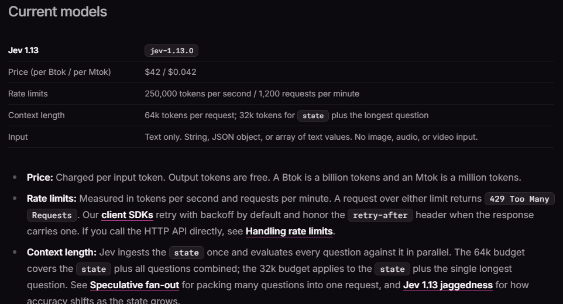
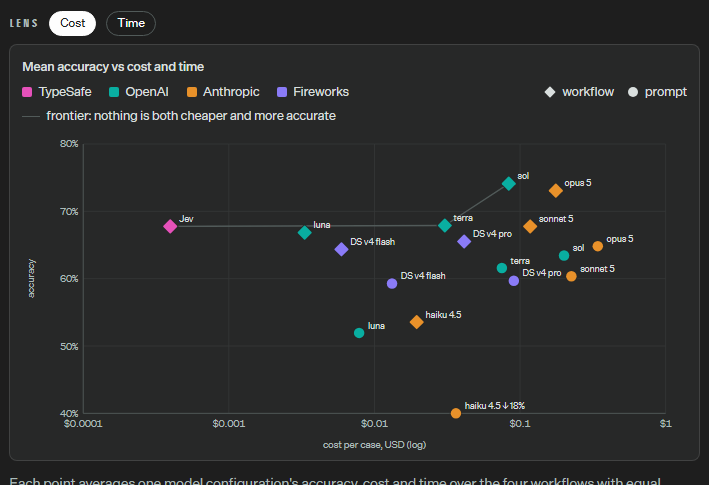
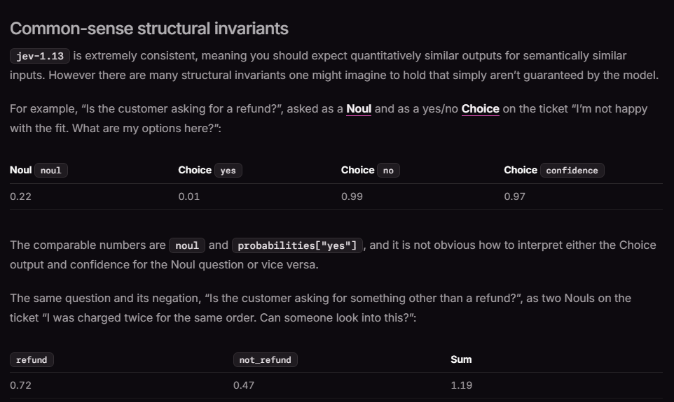

TypeSafe AI came out of two years of stealth on 15 September with Jev, a model that does not write anything. You hand it program state and a set of typed questions, and it hands back a value for each one plus a probability. No tokens streaming, no parsing, no schema validation. The founder, Diogo Almeida, co-invented RLHF and worked on the research behind ChatGPT, which is a strange pedigree for someone shipping a model whose whole pitch is that chat was the wrong target.
I spent yesterday afternoon in their docs, the launch blog and the workflow eval site. TypeSafe publish more fine print than most labs manage at launch, including a page listing nine ways their own model fails. The fine print is where this gets interesting, because the coverage so far has compressed three different claims into one word, and the word is “reliable”.
The part that is exactly as good as it sounds
Jev is priced at $0.042 per million input tokens. Output tokens are free. TypeSafe’s phrase is “too cheap to meter”.
That price is a description of the architecture. An autoregressive model answers you in two phases. Prefill reads your prompt in one parallel, compute-bound pass. Decode writes the answer one token at a time, and every single token requires pulling the whole model’s weights and the KV cache out of memory, which makes it sequential and bandwidth-bound. Decode is where the latency lives and where most of the marginal cost lives, which is why every vendor charges more for output than input. TypeSafe’s own comparison table puts the usual ratio at about five times.
Jev has no decode phase. Their docs put it plainly: “Jev ingests the state once and evaluates every question against it in parallel.” One forward pass over the state, every question answered off that single reading, all of them at once.

Once you see it that way the rest of the price sheet stops being surprising. There is no output to bill because nothing is written. The 250,000 tokens per second rate limit is a prefill-shaped number, because prefill batches well and decode does not. End-to-end latency of 70 to 500 milliseconds against 3 to 329 seconds for frontier models is one pass against hundreds of passes.
They already have a documented pattern for this, called speculative fan-out. Because the questions all read the same prefilled state, adding a question costs you the length of the question and almost nothing in time. So you send every question your decision tree could possibly need, including the branches that will turn out irrelevant, and discard what you do not use. Under sequential decode that idea is absurd. Here it is obviously correct, and it quietly changes how you would write the surrounding code.
Doing the arithmetic on their numbers
Since output is free and input is a flat rate, any published dollar figure divides straight back into tokens. That is a rare thing to be able to do to a model vendor.
The side-by-side demo on their home page reports $0.000081 for a Jev call. At $0.042 per million that is 1,929 billed input tokens. Jev’s point on the workflow-eval chart sits at roughly $0.0004 per case, which is about 9,500 tokens. So the eval cases are about five times the size of the demo, which lines up with TypeSafe telling you the demo was “highly simplified” and that its “relatively shorter input paints our model in an advantageous light”.
Keep that 9,500. It is roughly 30 percent of the 32k state budget, and it is the state size at which the advertised economics were measured. Their jaggedness page also says accuracy falls as the state grows with material the question does not need, a failure they name context rot. The cheap regime and the accurate regime are the same regime, and they degrade in the same direction. Those two facts are published one click apart.
While I was dividing things: the two numbers sitting under the “193.6x Faster, 444.6x Cheaper” banner are $0.000081 in 0.114s against $0.013880 in 8.566s. Those give 171x and 75x, not 445x and 194x. The blog resolves it honestly, the banner comes from the four workflow evals and the demo is a different and deliberately simpler query, but it is the sort of thing worth checking before repeating either pair.
What the benchmark’s y-axis actually is
The eval site says how the reference labels were made:
we assume that the code is correct, and measure against the current smartest large models. For this eval, the reference labels are generated via an average of the responses of GPT-6 Astra and Claude Fable 5.1, both at high thinking.
The y-axis labelled “accuracy” is agreement with two frontier LLMs, scored against their averaged opinion rather than against outcomes or human labels.

For the cost claim this is fine, and I want to be fair about that. If you already trust frontier models on these judgements and you want to know what the same judgements cost from Jev, this measures exactly the right thing.
But it caps what the chart can ever show. A model that scored 100 percent here would be a perfect imitation of Astra and Fable’s consensus. The metric cannot show Jev being better than them, and it cannot say anything at all about calibration, because calibration is defined against outcomes and there are no outcomes in this experiment. TypeSafe’s own AI primer defines it that way: probabilities “optimized against outcomes”, such that things assigned 0.8 happen about 80 percent of the time. The training method is literally named Reinforcement Learning for Calibrated Decisions. The headline benchmark does not test it.
That is not a contradiction and I do not think it is a trick. It is a benchmark built to answer the cost question, doing that job well, and being read as though it answered the reliability question too.
The chart also gives you the exchange rate. Jev is at about 67.7 percent. Matching it with an LLM costs about $0.035 a case against Jev’s $0.0004, roughly 90 times more for three tenths of a point. Buying the best point on the chart, about 74 percent, costs about $0.09, roughly 230 times more for six points.
Turn that into a deployment number. TypeSafe’s Doom demo makes about 10 decisions a second and they put it at around $7 an hour. That is 36,000 calls. The same workload on the most accurate configuration on their own chart would be about $3,200 an hour.
Jev is not smarter than a frontier model. It moves a whole regime, AI sitting in a software inner loop at 10Hz, from economically impossible to roughly the price of lunch, at about six points below frontier agreement. Whether six points is affordable is a question about your application, and that is what you should be evaluating.
Calibrated is not coherent
TypeSafe’s home page says “Zero Hallucinations” and the launch blog says Jev “can’t hallucinate”. The nuance note is more careful: “Our number is not empirical. Schema matching is guaranteed, thus we can confidently add 0% into the plots.”
That is a claim about types, not about truth. Jev cannot return an option you did not define. It can absolutely return the wrong one of the options you did define, and the jaggedness page is nine failure modes describing when: literal reading, counting, date comparison, indirection, adversarial content in the state, and more.
The page also has a table showing their own model breaking an identity you would assume holds.

Ask “is the customer asking for a refund” and get 0.72. Ask “is the customer asking for something other than a refund” and get 0.47. They sum to 1.19.
TypeSafe report this and tell you not to rely on structural invariance. They do not explain why it happens, and the explanation applies to every calibrated model, not only this one.
Calibration is a constraint on averages inside a group of predictions. It says that among all the items scored 0.7, about 70 percent turn out positive. It says nothing whatsoever about the relationship between two different answers on the same item. Coherence, meaning the probability axioms holding across related questions about one item, is a strictly stronger property, and nothing in the training objective asks for it.
I ran the smallest simulation that makes the point. Two predictors, one for a question and one for its negation, each calibrated to within a hundredth by construction, 200,000 items.
Mean sum 1.0001. Middle 98 percent running from 0.61 to 1.39. And 28.7 percent of items land at least as far from 1 as TypeSafe’s published example. Their 1.19 is not a defect, it is an ordinary draw from what calibrated-but-independent predictions look like.
So never combine probabilities from two separate questions with arithmetic that assumes they form a joint distribution. Ask the one question you actually mean, threshold that, and put the combination logic in code. Which is, to their credit, exactly what TypeSafe’s docs tell you to do.
One more thing worth knowing before you gate on it
Their confidence docs
are precise in a way that is easy to skim past. confidence is “a
statistic computed from the probability distribution”, collapsing how peaked the
distribution is into a single number. The calibration story attaches to the
probabilities. Confidence is a derived spread measure, and they explicitly say
“you are never locked into our definition” and hand you the full
distribution so you can compute your own.
So their own routing example, which requires confidence > 0.9 before
executing a transfer, is not asserting that the answer is right 90 percent of the
time. It is asserting that the distribution was sharp. Those correlate. They are not
the same thing. If you are gating something destructive, threshold the probability of
the specific option you are about to act on, not the shape statistic.
Noul answers carry no confidence at all, which is the consistent choice: a single probability has no distribution shape to summarise, and it is the calibrated quantity directly.
What I take from it
The architecture is the real story and it is a good one. Removing the decode phase for problems whose answer space is small and known is an obviously correct trade that the field has been slow to make, and the free-output price is a clean consequence rather than a stunt. I would use it tomorrow for routing, triage, filtering and guardrails, with small states and questions written literally.
The three properties that the word “reliable” is currently carrying should be kept apart. Type-safety is guaranteed and genuinely useful. Calibration is claimed, plausible, and not what the headline benchmark measures. Coherence is not claimed at all and their docs are clear that you should not assume it.
One last detail I enjoyed. Jev is named after William Stanley Jevons, and the FAQ says why: they expect machine intelligence to follow coal after the steam engine, where each order of magnitude off the price opened orders of magnitude more uses. Naming your model after the rebound effect is a fairly direct statement of what they think they are selling, and on the evidence of the price sheet they are probably right.